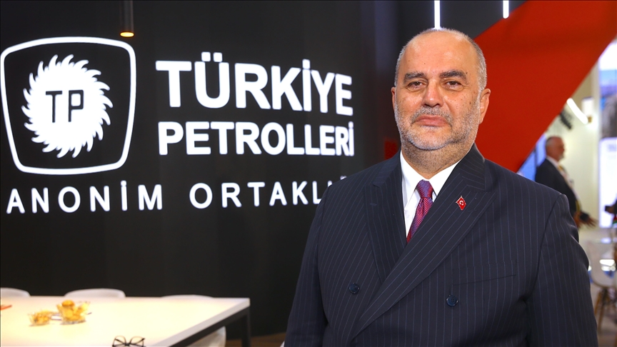
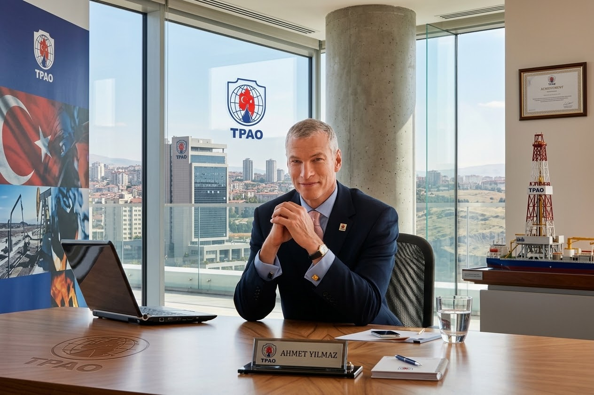
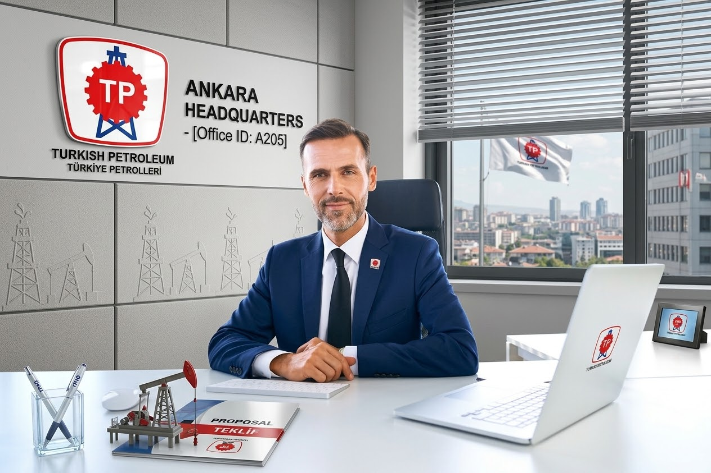
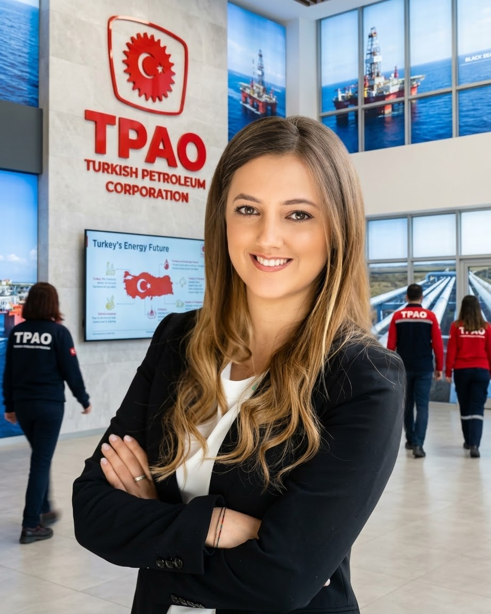
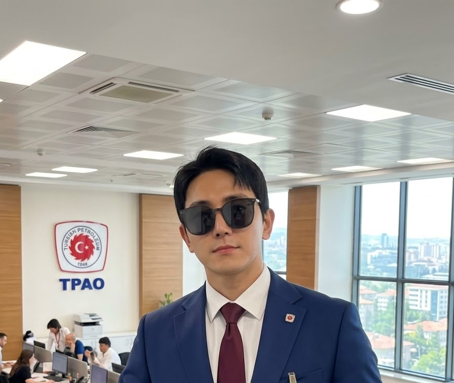

Our Leadership Team
TPAO's leadership includes senior executives responsible for guiding the organization's operations, technical activities and strategic direction.

Cem Erdem
General Manager and Chairman of the Board of Directors, Türkiye Petrolleri Anonim Ortaklığı (TPAO).

Rıza Özgür Temel
Deputy General Manager and Vice President at Türkiye Petrolleri Anonim Ortaklığı.

Hüseyin Eyeci
Deputy General Manager of Technical Affairs and Vice President at Türkiye Petrolleri Anonim Ortaklığı.

Zühtü Bati
Vice President at Türkiye Petrolleri Anonim Ortaklığı.

Murat Karataş
Batman Regional Manager at Türkiye Petrolleri Anonim Ortaklığı.

Ivan Lee Chan
Petroleum engineering director and technical leadership supporting exploration, production and field development activities at TPAO.